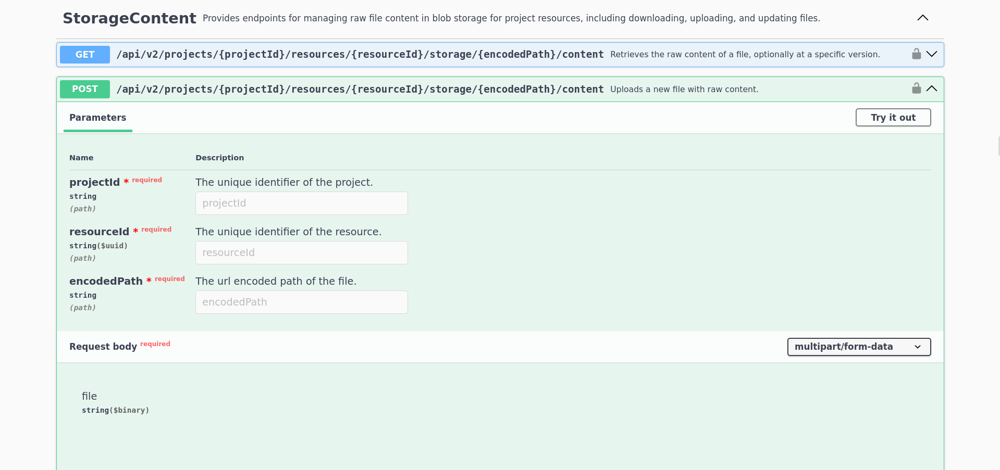
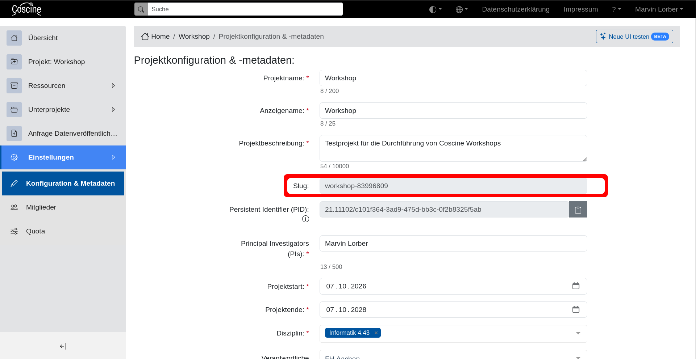
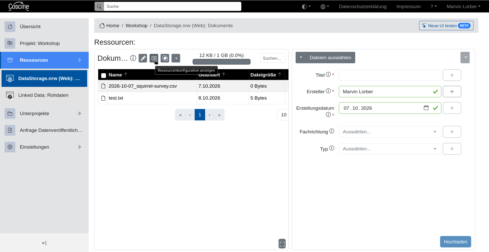
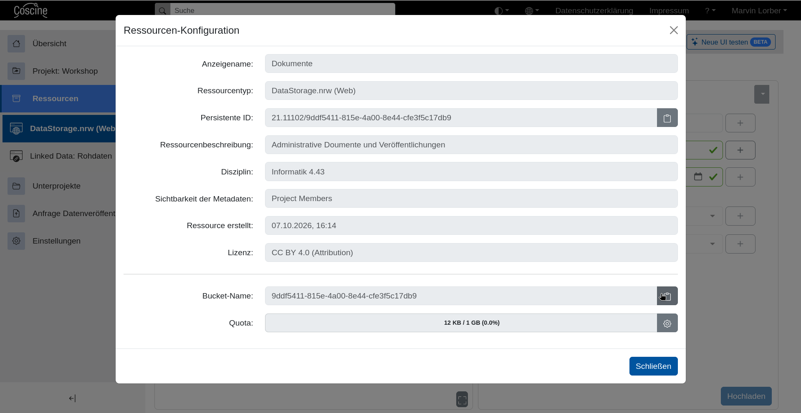
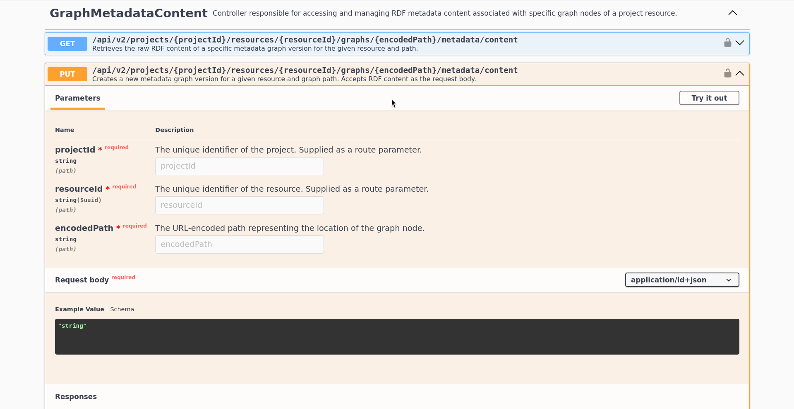
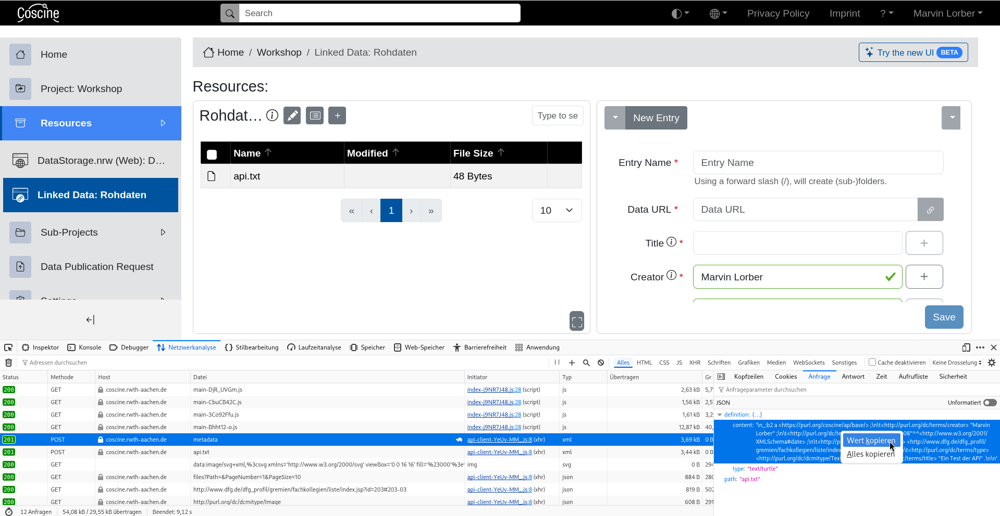

Automatisierte Dateiverwaltung
Last updated on 2026-10-16 | Edit this page
Estimated time: 25 minutes
Overview
Questions
- Wie können Dateien mit programmatisch verändert und beschrieben werden?
Objectives
- Lade eine Datei mithilfe eines Skripts hoch.
- Ändere die Metadaten einer Datei mithilfe der API.
Zugriffstoken
Um die API von Coscine nutzen zu können wird ein persönliches Zugriffstoken benötigt. Die Token können im Nutzendenprofil unter “Zugriffstoken erstellen” angelegt werden.
Ein Zugriffstoken funktioniert wie ein zweites Password für ihren Account und sollte entsprechend geschützt werden. Löschen Sie Token, die Sie nicht länger benötigen.
Der Name des Tokens wird nur benötigt, damit Sie ihre Token identifizieren können. Es wird generell empfohlen ein Token pro Projekt / Anwendungsfall anzulegen und spätestens mit dem Projektende ablaufen zu lassen.
Nach der Erstellung wird ihnen das Token angezeigt. Wichtig: Dies ist die einzige Gelegenheit das Token einzusehen, daher sollten Sie es sicher (z.B. in einem Passwortmanager) abspeichern.
API Anfragen mit Swagger Doku & curl
Die Coscine API verfügt gleich über zwei interaktive Dokumentationen: Swagger und Scalar. Die folgenden Beschreibungen beziehen sich auf die Swagger Dokumentation, sollten sich jedoch nicht wesentlich von der anderen Variante unterscheiden. Mit der API können alle Aktionen durchgeführt werden die ihnen auch in der Weboberfläche zur Verfügung stehen. In diesem Workshop werden wir uns auf das Hoch- und Herunterladen von Dateien konzentrieren.
Zuerst benötigen wir eine Datei mit etwas Inhalt:
Dies ist eine Testdatei.Dann suchen wir den richtigen Endpunkt in der Swagger Dokumentation.
Die relevante Gruppe heißt “StorageContent” wir müssen also etwas
scrollen oder mit der Suche (Strg+f) an die richtige Stelle
springen.

Zuerst müssen wir uns authentifizieren, was über das Schloss-Symbol
in der oberen rechten Ecke der Box möglich ist. In den folgenden Dialog
müssen wir das Wort Bearer und ein Leerzeichen und dann
unser Zugriffstoken eingeben. Beispiel:
Bearer eyJhb.....
Wenn sie sich im selben Browser bereits in der Coscine Weboberfläche angemeldet haben ist die Authentifizierung nicht zwingend nötig. Allerdings funktionieren die erzeugten curl Befehle dann nicht im lokalen Terminal weil die Autorization-Header fehlen.
Danach kann mit dem Knopf “Try it out” der interaktive Modus gestartet werden.
Der Endpunkt benötigt vier Parameter:
projectId
Dieser Parameter, genau wie die resourceId danach könnte mithilfe von anderen API Endpunkten herausgefunden werden. Für den Moment ist es aber einfacher beide Werte aus der Weboberfläche herauszusuchen. Die projectId kann in den Projekteinstellungen unter der BezeichnungSluggefunden werden.
resourceId
Dieser Parameter kann in der Weboberfläche unter “Ressourcenkonfiguration anzeigen” > “Bucket-Name” gefunden werden:

encodedPath
Der Pfad unter dem die Datei in der Coscine-Ressource gespeichert werden soll in URL-Codierung. Wenn sie gezwungen sind Sonderzeichen in den Dateipfaden zu verwenden sollten Sie dafür einen online URL-Encoder nutzen. Wenn Sie nur Buchstaben, Zahlen und Leerzeichen verwenden kann die Codierung auch von Hand durchgeführt werden: Alle/müssen mit%2Fund alle Leerzeichen mit%20ersetzt werden. Austest/Test Datei.txtwürde alsotest%2FTest%20Datei.txt.Die Datei die hochgeladen werden soll
Anschließend können wir die Anfrage mit “Execute” absenden. Daraufhin erscheint eine Box mit einem curl-Befehl mit dem wir die selbe Anfrage von einem lokalen Terminal aus erzeugen können. Auf diese Weise können wir aus verschiedenen Anfragen ein Script für komplexere Abläufe erstellen.
Darunter ist die Box mit der Antwort des Servers. Wir haben eine Fehlermeldung erhalten!
JSON
{
"data": {
"type": "https://tools.ietf.org/html/rfc7231#section-6.5.1",
"title": "Bad Request",
"status": 400,
"instance": "/api/v2/projects/{projectId}/resources/{resourceId}/storage/test.txt/content",
"httpMethod": "POST",
"errorId": "MissingMetadataBadRequestException"
},
"statusCode": 400,
"isSuccess": false,
"traceId": "XXXXXXX:00000",
"pagination": null,
"categories": null
}Auch bei Verwendung der API stellt Coscine sicher, dass für jede Datei Metadaten hochgeladen werden. Wir müssen erst die Metadaten für den Zielpfad und dann die Datei selbst hochladen.
Hochladen von Metadaten
Für das Hochladen von Metadaten wird ein Endpunkt der Gruppe “GraphMetadataContent” benötigt. Die Benennung kommt daher, dass aus allen Metadaten in Coscine ein Wissensgraph erstellt wird, der mit diesen Endpunkten verändert wird.

Die ersten drei Parameter können wir eins-zu-eins vom Endpunkt zum
Upload der Datei übernehmen, der vierte ist etwas komplizierter. Hier
benötigen wir die Metadaten für die Datei, wie sie im Metadatenprofil
der Zielressource vorgegeben sind und nach ld+json oder
turtle formatiert. Auch hier wäre es theoretisch möglich
die benötigten Informationen mit mehreren Anfragen an die API
zusammenzusetzen, in der Praxis ist das allerdings viel zu aufwändig.
Daher helfen wir uns auch hier durch kreative Nutzung der Weboberfläche
aus.
Wir starten den Prozess eine Datei (oder Metadaten im falle einer
LinkedData Ressource) Hochzuladen und öffnen vor dem Absenden die
Entwicklerwerkzeuge des Browsers (Bei den meisten Browsern
F12) und wählen das Tool “Netzwerkanalyse” (Der genaue Name
hängt vom Browser ab).
Dann laden wir die Datei hoch. In der Netzwerkanalyse sollte jetzt
ein POST mit den Metadaten auftauchen. Aus der Anfrage
dieses Eintrag können wir uns die benötigten Daten heraus kopieren:

Auf Basis dieser Beispieldaten kann in der Regel leicht von Hand ein neuer Metadatensatz erstellt werden.
_:b2 a <https://purl.org/coscine/ap/base/> ;
<http://purl.org/dc/terms/creator> "Marvin Lorber" ;
<http://purl.org/dc/terms/created> "2026-10-08"^^<http://www.w3.org/2001/XMLSchema#date> ;
<http://purl.org/dc/terms/subject> <http://www.dfg.de/dfg_profil/gremien/fachkollegien/liste/index.jsp?id=203#203-03> ;
<http://purl.org/dc/terms/type> <http://purl.org/dc/dcmitype/Text> ;
<http://purl.org/dc/terms/title> "Ein Test der API" .
Jetzt können wir die Metadaten auch über die API hochladen, für den
“Request Body” muss in Swagger text/turtle ausgewählt
werden. Beachten Sie, dass falls für den angegebenen Pfad bereits
Metadaten existieren diese “still” mit einer neuen Version überschrieben
werden.
Anschließend können wir auch die Datei selbst über die API hochladen. Dafür können wir dieses Mal der curl Befehl nutzen der uns beim ersten Versuch generiert wurde. Dafür muss gegebenenfalls der Pfad in der letzten Zeile angepasst werden, damit er auf die Datei auf unserer Festplatte zeigt.
Herunterladen von Dateien
Zeit die neu erstellte Datei herunterzuladen. Dafür benötigen wir wieder einen Endpunkt aus der Gruppe “StorageContent”. Die drei benötigten Parameter können wir von unseren bisherigen Anfragen übernehmen.
Wenn wir den generierten curl Befehl lokal ausführen wird uns der
Inhalt der Datei im Terminal ausgegeben. Um den Inhalt direkt in eine
Datei umzuleiten können wir die -o Option nutzen.
BASH
curl -X 'GET' \
'https://coscine.rwth-aachen.de/coscine/api/v2/projects/{projektId}/resources/{resourceId}/storage/test.txt/content' \
-H 'accept: application/octet-stream' \
-H 'Authorization: Bearer [Token]' \
-o test.txtChallenge
Diese Challenge erfordert grundlegende Kenntnisse in der
Programmierung mit Bash. Sie haben einen Algorithmus entwickelt um die
Beobachtungsprotokolle automatisiert zu annotieren. Um die Verarbeitung
auf einem Rechencluster durchführen zu können müssen Sie Herunter- und
Hochladen von Dateien automatisieren.
Schreiben Sie ein Skript um alle obs_***.csv über die API
herunterzuladen und anschließend annotiert_obs_***.csv mit passenden
Metadaten hochzuladen.
BASH
#!/usr/bin/env bash
API_TOKEN="${COSINE_API_TOKEN:?Setze die Umgebungsvariable COSINE_API_TOKEN}"
BASE_URL="https://coscine.rwth-aachen.de/coscine/api/v2"
# ============================================================
# Liste der zu ladenden Dateien
# Format: "projektId|resourceId|filename"
# ============================================================
FILES=(
"12345|67890|obs_2025-01-15_brunnen.csv"
"12345|67890|obs_2025-01-15_rathausdach.csv"
"23456|78901|obs_2025-01-15_baeckerei.csv"
)
# ============================================================
# Hilfsfunktionen
# ============================================================
download_file() {
local projekt_id="$1"
local resource_id="$2"
local filename="$3"
local url="${BASE_URL}/projects/${projekt_id}/resources/${resource_id}/storage/${filename}/content"
local dest="./${filename}"
curl -X GET -o "$dest" \
-H "Authorization: Bearer ${API_TOKEN}" \
-H "Accept: application/octet-stream" \
"$url"
}
upload_metadata() {
local projekt_id="$1"
local resource_id="$2"
local filename="$3"
local dest="annotiert_$(jq -rn --arg x ${filename} '$x|@uri')"
local url="${BASE_URL}/projects/${projekt_id}/resources/${resource_id}/graphs/${dest}/metadata/content"
local metadata="
_:b2 a <https://purl.org/coscine/ap/base/> ;
<http://purl.org/dc/terms/creator> \"Ihr Name\" ;
<http://purl.org/dc/terms/created> \"$(date -I)\"^^<http://www.w3.org/2001/XMLSchema#date> ;
<http://purl.org/dc/terms/subject> <http://www.dfg.de/dfg_profil/gremien/fachkollegien/liste/index.jsp?id=203#203-03> ;
<http://purl.org/dc/terms/type> <http://purl.org/dc/dcmitype/Dataset> ;
<http://purl.org/dc/terms/title> \"Automatisch annotierte version von $filename\" .
"
curl -X PUT "$url" \
-H "Authorization: Bearer ${API_TOKEN}" \
-H "Accept: */*" \
-H "Content-Type: text/turtle" \
-d '${metadata}'
}
upload_file() {
local projekt_id="$1"
local resource_id="$2"
local filename="$3"
local dest="annotiert_$(jq -rn --arg x ${filename} '$x|@uri')"
local url="${BASE_URL}/projects/${projekt_id}/resources/${resource_id}/storage/${dest}/content"
curl -X POST "$url" \
-H "Authorization: Bearer ${API_TOKEN}" \
-H "Accept: */*" \
-H "Content-Type: multipart/form-data" \
-F "file=@annotiert_${filename};type=text/plain"
}
for entry in "${FILES[@]}"; do
IFS='|' read -r projekt_id resource_id filename <<< "$entry"
download_file "$projekt_id" "$resource_id" "$filename"
touch "annotiert_${filename}"
upload_metadata "$projekt_id" "$resource_id" "$filename"
upload_file "$projekt_id" "$resource_id" "$filename"
done